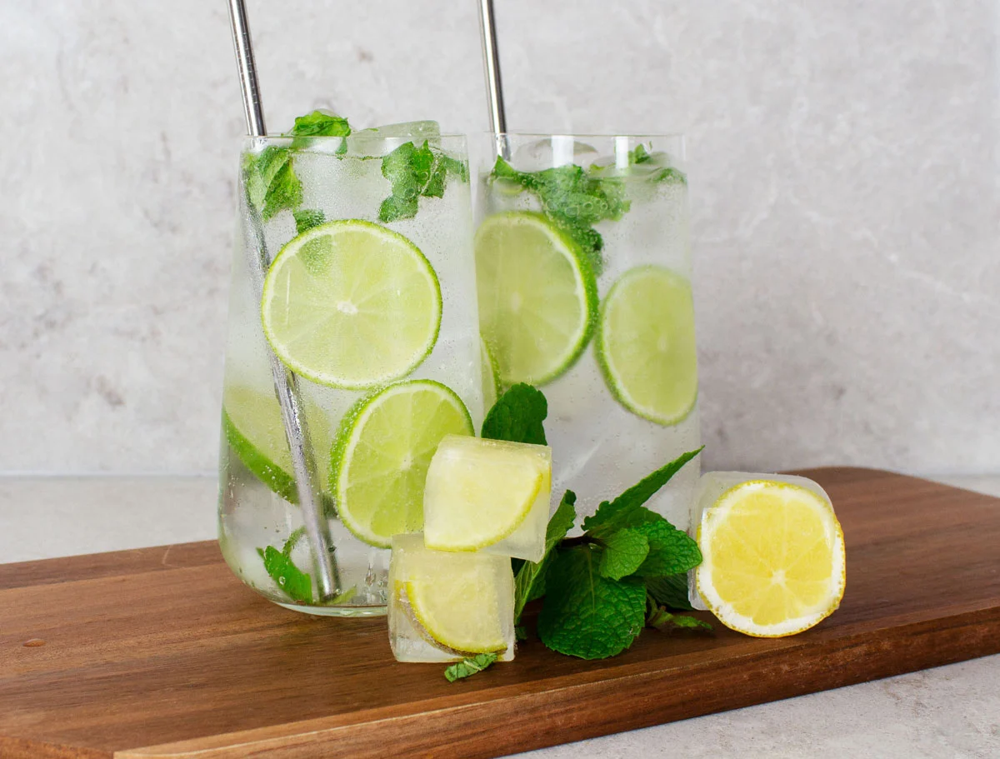

Virgin Mojito

Try a refreshing, non-alcoholic mojito cocktail recipe that skips the usual rum to create a booze-free blend for parties.
Ingredients
- 1 tbsp sugar
- small bunch of mint
- 3 limes, juiced
- soda water
Steps
- Muddle the sugar with leaves from the mint using a pestle and mortar.
- Put a handful of crushed ice into 2 tall glasses. Divide the lime juice between the glasses with the mint mix.
- Add a straw and top up with soda water.
Back